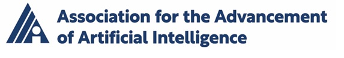

EAAI-27: The 17th Symposium on Educational Advances in Artificial Intelligence
Montreal, Canada Collocated with AAAI-27
February 21-23, 2027
Sponsored by the Association for the Advancement of Artificial Intelligence
EAAI-27
What's New (rev. May 1, 2026)
- Website is up (May 1, 2026)
Important Dates
Submission Dates will be posted soon!
About EAAI-27
The Seventeenth Symposium on Educational Advances in Artificial Intelligence (EAAI-27) will be held along with AAAI-27.
EAAI-27 invites AI education researchers and educators to share and discuss advances in teaching and learning about Artificial Intelligence, including the education and training of AI practitioners and users, defined broadly. The EAAI symposium provides a venue for teachers, educators, and researchers to share their innovative approaches to engaging students at all levels in learning about AI-related topics (e.g., search, logic, machine learning, natural language processing, computer vision, robotics, generative AI, AI ethics, AI literacy, AI safety, and others).
Please note that submissions focused on the development, investigation, or use of AI to support teaching and learning of non-AI related topics (e.g., science, math, programming, reading, etc) are not within the scope of EAAI-27. EAAI-27 will focus on education about AI, rather than the use of AI to support education in other domains. We encourage authors of such work to consider submitting to the AAAI main track, IAAI-27 (co-located with AAAI-27), or (if running this year) the AI in Education workshop https://ai4ed.cc/.
EAAI-27 is expected to include invited talks (including a talk of the recipient of the AAAI/EAAI Outstanding AI Educator Award 2027), two paper tracks, Model AI Assignments, and other exciting activities.
Call for Participation
The call for participation is now available here.
EAAI-27 has several tracks for submission:
Details for length and style of submissions are provided in the call for participation.
All submissions should be anonymous for double-blind review.
EAAI-27 will not consider any paper that, at the time of submission, is under review for or has already been published or accepted for publication in a refereed journal or conference. Once submitted to EAAI-27, papers may not be submitted to another refereed journal or conference during the review period. These restrictions do not apply to unrefereed forums or workshops without archival proceedings.
AAAI/EAAI Outstanding Educator Award
We will invite you to submit your nominations for the 2027 AAAI/EAAI Patrick Henry Winston Outstanding Educator Award soon!AAAI/ACM SIGAI Innovative AI Education Program
EAAI-27 will continue the AAAI/ACM SIGAI Innovative AI Education Program. More information on how to apply will be available soon. Additional information including a list of past awardees is available at https://eaai-conf.github.io/eaai/iaep.html.EAAI-27 Organizers and Contact Information
Correspondence may be sent to EAAI at eaai27chairs@aaai.org.
EAAI-27 Co-Chair
-
Lisa Zhang
University of Toronto Mississauga
website -
Bradford Mott
North Carolina State University
website
Main Track Chairs
- Lisa Zhang, University of Toronto (lczhang@cs.toronto.edu)
- Bradford Mott, North Carolina State University (bwmott@ncsu.edu)
- Gosia Migut, Delft University of Technology (M.A.Migut@tudelft.nl)
K12 Track Chairs
- Kate Moore, MIT (ksmoore@education.mit.edu)
- Amy Eguchi, University of California San Diego (a2eguchi@ucsd.edu)
- Henriikka Vartiainen, University of California San Diego (Henriikka.Vartiainen@uef.fi)
Model AI Assignments Chairs
- Todd Neller, Gettysburg College (tneller@gettysburg.edu)
BOF Chair
- Giulia Toti, University of British Columbia (giulia.toti@ubc.ca)
Awards Chair
- Marion Neuman, Washington University (m.neumann@wustl.edu)
- Rajagopal Venkat, Northeastern University (r.venkatesaramani@northeastern.edu)
Program Committee
Support for EAAI-27
Generous support for EAAI is made available by:
|
|

|
|